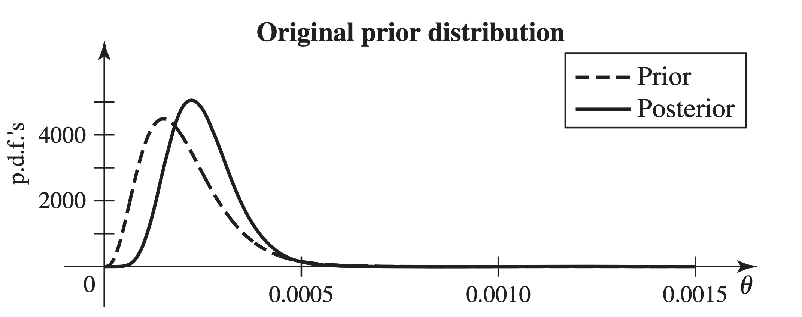

Goal: know as much as possible about how long each component is likely to last
By LLN,
and Theorem 6.2.5 says
Note: When we treat the unknown parameter(s) \(\theta\) as random, then the joint distribution of the observable random variables indexed by \(\theta\) is understood as the conditional distribution of the observable random variables given \(\theta\).
Statistical inference:
A procedure that produce a probabilistic statement about some or all parts of a statistical model.
In a problem of statistical inference, a characteristic or combination of characteristics that determine the joint distribution for the random variables of interest is called a parameter of the distribution. The set \(\Omega\) of all possible values of a parameter \(\theta\) or of a vector of parameters \((\theta_1, \theta_2, \dots, \theta_k)\) is called the parameter space.
Suppose \(X_1, X_2, \dots, X_n\) are observable random variables. Let \(r\) be an arbitrary real-valued function of \(n\) real variables. Then the random variable \(T = r(X_1, X_2, \dots, X_n)\) is called a statistic.
For example,
Suppose before observing any data, the company believes the failure rate is around \(0.5\) per year but not sure.
They model \(\theta\) as a random variable which has the exponential distribution, i.e. \(\theta \sim \text{Exp}(0.5)\).
Suppose one has a statistical model with parameter \(\theta\). If one treats \(\theta\) as a random variable, then the distribution that one assigns to \(\theta\) before observing any other random variables of interest is called its prior distribution.
We use \(\xi(\theta)\) to denote the prior p.m.f. or p.d.f. as a function of \(\theta\).
Let \(\theta\) denote the probability of obtaining a head when a certain coin is tossed, and suppose that it is known that the coin either is fair or has a head on each side: \(\theta =1/2\) or \(\theta = 1\).
If the prior probability that the coin is fair is \(0.8\), then the prior p.m.f. of \(\theta\) is
Suppose that the proportion \(\theta\) of defective items in a large manufactured lot is unknown and that the prior distribution assigned to \(\theta\) is the uniform distribution on the interval \([0, 1]\).
Then the prior p.d.f. of \(\theta\) is
Lifetimes of Fluorescent Lamps
Determine the prior p.d.f. of \(\theta\).
Solution
Recall that if \(\theta \sim \text{Gamma} (\alpha, \lambda)\), then
Therefore, we have
and thus,
So the prior p.d.f. of \(\theta\) is
Suppose in Example 7.2.4 that we observe a collection of \(n\) lifetimes of fluorescent lamps, how would we change the distribution of \(\theta\) to take account of the observed data?
Consider a statistical inference problem with parameter \(\theta\) and random variables \(X_1, \dots, X_n\) to be observed. The conditional distribution of \(\theta\) given \(X_1, \dots, X_n\) is called the posterior distribution of \(\theta\).
The conditional p.m.f or p.d.f. of \(\theta\) given \(X_1 = x_1, \dots, X_n = x_n\) is typically denoted \(\xi(\theta|x_1, \dots, x_n)\) or \(\xi(\theta|\vec{x}), \vec{x} = (x_1, \dots, x_n)\).
Question: How to find the posterior distribution?
Answer: Bayes’ theorem.
Suppose that the \(n\) random variables \(X_1, \dots, X_n\) form a random sample from a distribution for which the p.d.f. or the p.m.f. is \(f(x|\theta)\). Suppose also that the value of the parameter \(\theta\) is unknown and the prior p.d.f. or p.m.f. of \(\theta\) is \(\xi(\theta)\).
Then the posterior p.d.f. or p.m.f. of \(\theta\) is
where
Lifetimes of Fluorescent Lamps (Revisited)
Suppose also that the lifetimes \(X_1,\dots, X_n\) of a random sample of \(n\) lamps are observed.
We shall determine the posterior p.d.f. of \(\theta\) given that \(X_1 = x_1, \dots , X_n = x_n\).
Have: \(X_i\sim \text{Exp} (\theta)\), and the prior p.d.f. \(\xi(\theta)\) of \(\theta\), i.e.,
Want: the posterior p.d.f. \(\xi(\theta|\vec{x})\).
Need: \(f_n(\vec{x}|\theta)\) and \(g_n(\vec{x})\).
The conditional joint p.d.f. of \(X_1, \dots, X_n\) can be written in the following form, for \(x_i>0\, (i=1, \dots, n)\):
where \(y = \sum_{i=1}^n x_i\).
The \(n \text{-dimensional}\) marginal joint p.d.f. of \(X_1, \dots, X_n\) is
Finally,
for \(\theta>0\).
In other words, \(\xi(\theta|\vec{x})\sim \text{Gamma} (n+4, y+20,000)\).
For example, suppose that we observe the following \(n=5\) lifetimes in hours: \(2911, 3403, 3237, 3509\) and \(3118\). Then \(y = 16,178\), and the posterior p.d.f. of \(\theta\) is the gamma distribution with parameters \(9\) and \(36,178\).

Suppose that the number of defects on a roll of magnetic recording tape has a Poisson distribution for which the mean \(\lambda\) is either \(1.0\) or \(1.5\), and the prior p.m.f. of \(\lambda\) is as follows:
If a roll of tape selected at random is found to have three defects, what is the posterior p.m.f. of \(\lambda\)?
Solution
Let \(X\) be the number of defects, and observed \(x = 3\).
The (conditional) p.m.f. of \(X\):
Want: \(\xi(\theta|x)\)?
Note here we only one sample, that is, \(n=1\).
The marginal p.m.f. of \(X\) is
and thus \(g_1(3) = 0.09983\dots\)
Therefore,
and
Try \(X = 0\)?
What if \(n>1\)?
Say we observed \(X_1 = x_1, X_2 = x_2\). Then
where \(\propto\) means “proportional to (up to a constant, but nothing to do with \(\theta\))”.
Proportion of Defective Items (Revisited)
What is the posterior distribution?
We first re-write the p.m.f. of \(X_i\) as follows:
Then
Therefore,
(1) Recall the p.d.f. of \(\text{Beta} (\alpha, \beta)\): for \(x\in (0,1)\)
If \(\alpha =1, \beta = 1\), then for \(x\in (0,1)\),
Thus, \(\text{Beta}(1, 1) = \text{Unif}([0,1])\).
(2) Sequential observations
(3) When the joint p.d.f. or p.m.f. \(f_n(\vec{x}|\theta)\) of the observations in a random sample is regarded as a function of \(\theta\) fro given values of \(x_1, \dots, x_n\), it is called the likelihood function.
Thus, the posterior is proportional to the product of the likelihood function and the prior.
For each of the most popular statistical models, there exists a family of distributions for the parameter with a very special property. If the prior distribution is chosen to be a member of that family, then the posterior distribution will also be a member of that family. Such a family of distributions is called a conjugate family. Choosing a prior distribution from a conjugate family will typically make it particularly simple to calculate the posterior distribution.
Theorem 7.3.1 Suppose that \(X_1, \dots , X_n\) form a random sample from the Bernoulli distribution with parameter \(\theta\), which is unknown (\(0 < \theta < 1\)). Suppose also that the prior distribution of \(\theta\) is the beta distribution with parameters \(\alpha>0\) and \(\beta>0\).
Then the posterior distribution of \(\theta\) given that \(X_i =x_i \, (i=1,\dots,n)\) is the beta distribution with parameters \(\alpha + \sum_{i=1}^n x_i\) and \(\beta + n - \sum_{i=1}^n x_i\).
Proof.
Prior p.d.f. of \(\theta\): \(\xi(\theta) = C \theta^{\alpha -1} ( 1- \theta )^{\beta-1}, \quad 0<\theta< 0\).
The joint p.m.f. of \(X_1, \dots, X_n\):
The posterior distribution of \(\theta\):
Therefore, \(\xi(\theta|\vec{x}) \sim \text{Beta} (\alpha + y, n + \beta - y)\).
The family of beta distributions is called a conjugate family of prior distribution, for samples from a Bernoulli distribution.
The family of beta distribution is closed under sampling from a Bernoulli distribution.
Theorem 7.3.2 Suppose that \(X_1, \dots , X_n\) form a random sample from the Poisson distribution with parameter \(\theta>0\), which is unknown. Suppose also that the prior distribution of \(\theta\) is the gamma distribution with parameters \(\alpha>0\) and \(\lambda>0\).
Then the posterior distribution of \(\theta\) given that \(X_i =x_i \, (i=1,\dots,n)\) is the gamma distribution with parameters \(\alpha + \sum_{i=1}^n x_i\) and \(\lambda + n\).
For the proof, similar to Theorem 7.3.1, also check the textbook.
Theorem 7.3.3 Suppose that \(X_1, \dots , X_n\) form a random sample from a normal distribution for which the value of the mean \(\theta\) is unknown and the value of the variance \(\sigma^2>0\) is known. Suppose also that the prior distribution of \(\theta\) is the normal distribution with mean \(\mu_0\) and variance \(v_0^2\).
Then the posterior distribution of \(\theta\) given that \(X_i =x_i \, (i=1,\dots,n)\) is the normal distribution with \(\mu_1\) and variance \(v_1^2\), where
Proof.
The prior:
The likelihood function:
Next, we use the following fact (see Exercise 24 on page 316):
and so
Thus, the posterior:
Theorem 7.3.4 Suppose that \(X_1, \dots , X_n\) form a random sample from the exponential distribution with parameter \(\theta>0\), which is unknown. Suppose also that the prior distribution of \(\theta\) is the gamma distribution with parameters \(\alpha>0\) and \(\lambda>0\).
Then the posterior distribution of \(\theta\) given that \(X_i =x_i \, (i=1,\dots,n)\) is the gamma distribution with parameters \(\alpha + n\) and \(\lambda + \sum_{i=1}^n x_i\).
For the proof, check the textbook.
Assume in a (giant) box, there are either red or blue balls. You might wish to estimate the (true) proportion \(\theta\) of red balls without specifying the entire distribution.
Question: How to choose such a single-number estimate?
Let \(X_1, \dots X_n\) form a random sample from a distribution with p.d.f. or p.m.f. \(f(x|\theta)\), where \(\theta\) is unknown.
An estimator of the parameter \(\theta\), based on the random sample \(X_1, \dots, X_n\), is a real-valued function \(\delta(X_1, \dots, X_n)\).
If \(X_1 = x_1, \dots, X_n = x_n\) are observed, then \(\delta(x_1, \dots, x_n)\) is called the estimate of \(\theta\).
Let \(X_1, \dots, X_n\) be a random sample such that
Then the sample mean
is an estimator of the proportion \(\theta\).
If \(X_1 = 1, X_2=1, X_3 = 0\) are observed, then
is an estimate of \(\theta\).
Note: The estimator \(\delta(X_1,\dots, X_n)\) is a random variable, but the estimate \(\delta(x_1, \dots, x_n)\) is a real value.
Question: How good is the estimator/estimate?
A loss function is a real-valued function of two variables, \(L(\theta, a)\), where \(\theta\in \Omega\), and \(a\) is a real number.
The interpretation is that the statistician loses \(L(\theta, a)\) if the parameter equals \(\theta\), and the estimate equals \(a\).
Question: If we would like to find the best estimate, then what do we mean by the “best”?
Let \(\vec{x} = (x_1, \dots, x_n)\) be the observed values, and \(\xi(\theta|\vec{x})\) be the posterior distribution of \(\theta\). Then the (conditional) expected loss is
We would like to choose an \(a\) which minimizes \eqref{eq:7-4-2}.
Clearly, the value of \(a\) depends on the observations \(\vec{x}\).
We call \(\delta^\ast(\vec{x})\), a value of \(a\) such that \(\mathbb{E}(L(\theta| a)|\vec{x})\) is minimized, a Bayes estimate of \(\theta\), and \(\delta^\ast(\vec{X})\), a Bayes estimator of \(\theta\).
That is, for any \(\vec{x}\), we have
Assume random sample \(X_1, \dots, X_n\) such that \(X_i\sim \text{Ber}(\theta)\)
Prior distribution of \(\theta\): \(\xi(\theta)\sim \text{Beta}(5, 10)\).
Let \(Y = \sum_{i=1}^n X_i\), and observe \(y = 1, n = 20\).
Find the Bayes estimate of \(\theta\) using the square error loss function, i.e., to find a value of \(a\) which minimizes
Fact: (check Theorem 4.7.3 on page 260-261)
Suppose that the square error loss function is used and that the posterior mean of \(\theta\), \(\mathbb{E}(\theta|\vec{X})\), is finite. Then, a Bayes estimator of \(\theta\) is \(\delta^\ast(\vec{X}) = \mathbb{E}(\theta|\vec{X})\).
Back to the previous example.
By Theorem 7.3.1 (page 394 - 395),
Recall that
Therefore,
In general, a Bayes estimator in this case is
Assume random sample \(X_1, \dots, X_n\) such that \(X_i\sim \text{Poisson}(\theta)\).
Prior distribution of \(\theta\): \(\xi(\theta)\sim \text{Gamma}(3, 1)\).
Observed:
Find the Bayes estimate of \(\theta\) using the square error loss function.
By Theorem 7.3.2 (page 397),
Recall that
Therefore,
Assume random sample \(X_1, \dots, X_n\) such that \(X_i\sim \mathcal{N}(\theta, \sigma^2)\), where \(\theta\) is unknown, but \(\sigma^2\) is known.
Prior distribution of \(\theta\): \(\xi(\theta)\sim \mathcal{N}(\mu_0, v_0^2)\).
Find the Bayes estimate of \(\theta\) using the square error loss function.
By Theorem 7.3.3 (page 398),
Therefore,
Fact:
When the absolute error loss function is used, a Bayes estimator is \(\delta^\ast(\vec{X})\) equal to to a median of the posterior distribution of \(\theta\).
For normal distribution, since the mean is the same as the median, \(\delta^\ast(\vec{X})\) is the same for both \(L(\theta, a) = (\theta - a)^2\), and \(L(\theta, a) = |\theta - a|\).
If \(\delta^\ast(\vec{X}) \to \theta\) as \(n \to \infty\), the sequence of estimators \(\delta^\ast(\vec{X})\) is called a consistent sequence of Bayes estimators.
In most cases, the Bayes estimators form a consistence sequence.